NuzzlingsNuzzlingsNuzzlingsNuzzlings
Bir yavru kedi sahiplen, sev, besle ve büyümesini izle. Sakin ve sıcacık.Adopt a kitten, cuddle it, feed it and watch it grow up. Cozy and calm.Adopta un gatito, mímalo, aliméntalo y míralo crecer. Tranquilo y acogedor.Adote um gatinho, faça carinho, alimente e veja ele crescer. Calmo e fofo.
Nuzzlings, sıcacık bir kedi bakım oyunu. Üç yavru kediden birini seç, ona bir ad ver ve birlikte bir yuva kurun.Nuzzlings is a cozy cat-care game. Choose a kitten from three, give it a name and make a home together.Nuzzlings es un acogedor juego de cuidar gatos. Elige un gatito entre tres, ponle nombre y formen un hogar juntos.Nuzzlings é um jogo aconchegante de cuidar de gatos. Escolha um gatinho entre três, dê um nome a ele e construam um lar juntos.


Ekran görüntüleriScreenshotsCapturas de pantallaCapturas de tela
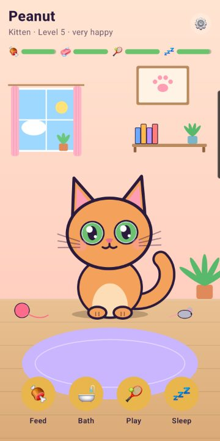

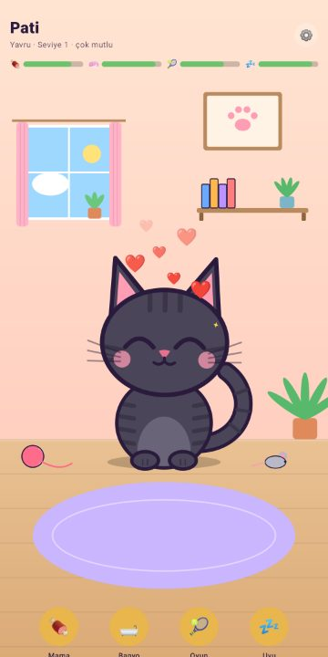
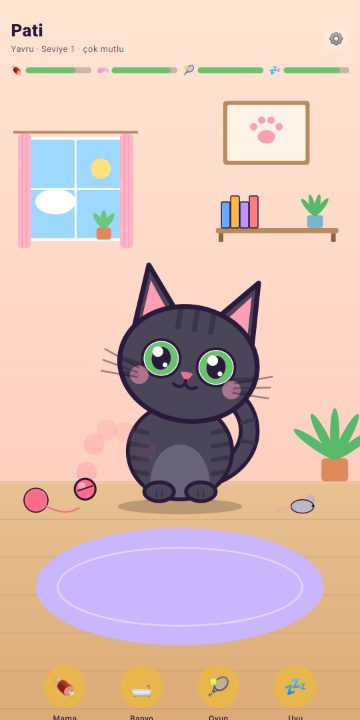
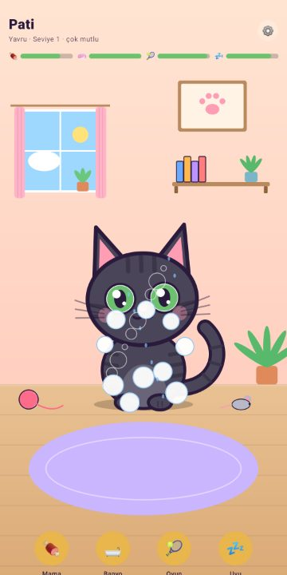
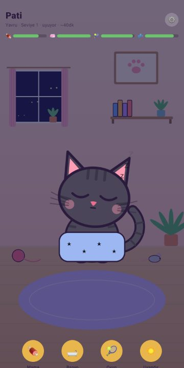
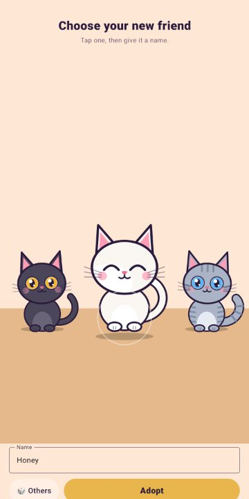
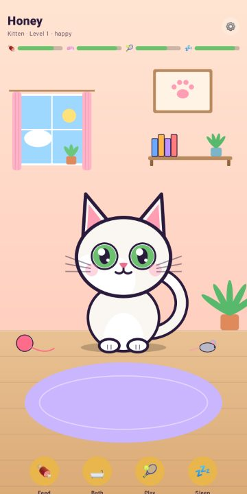
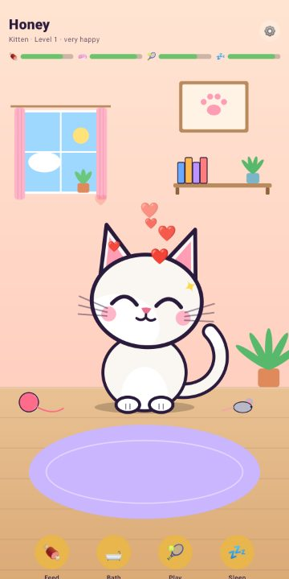
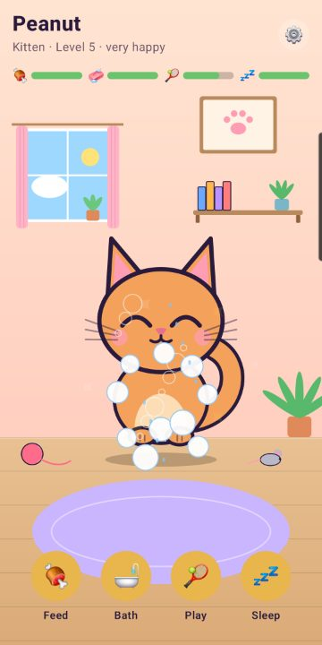
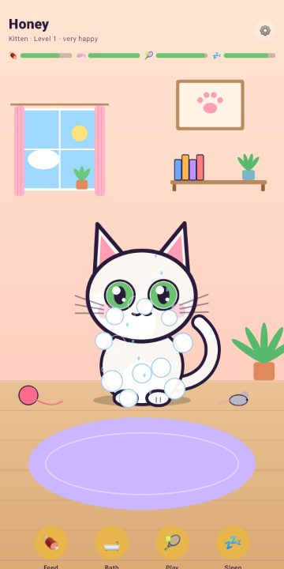
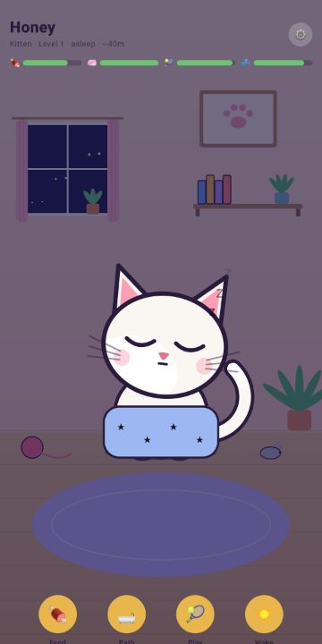


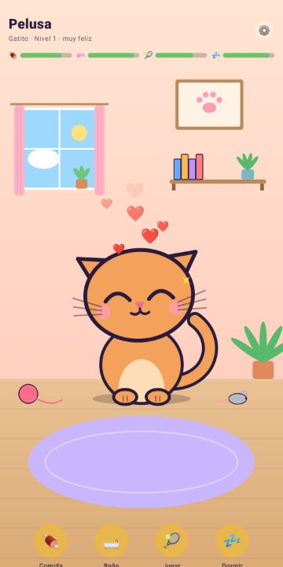
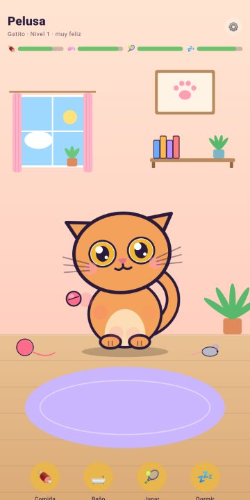
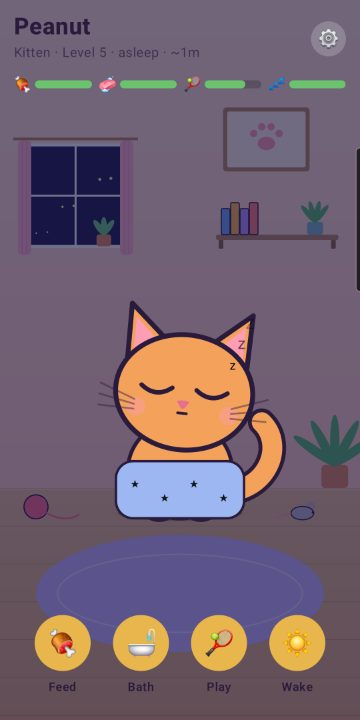
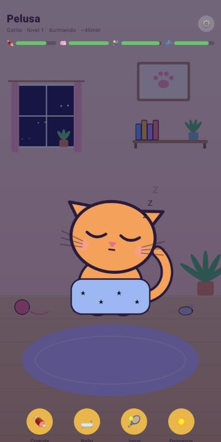
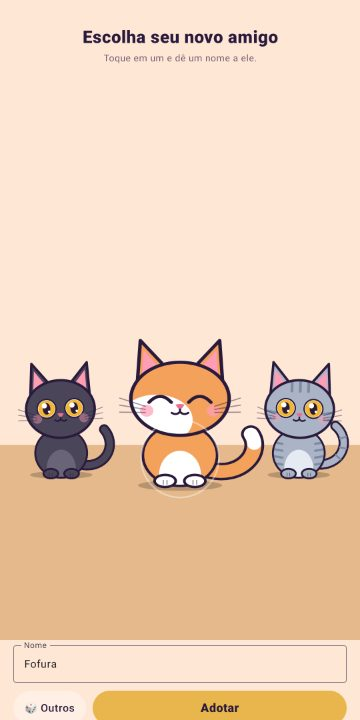
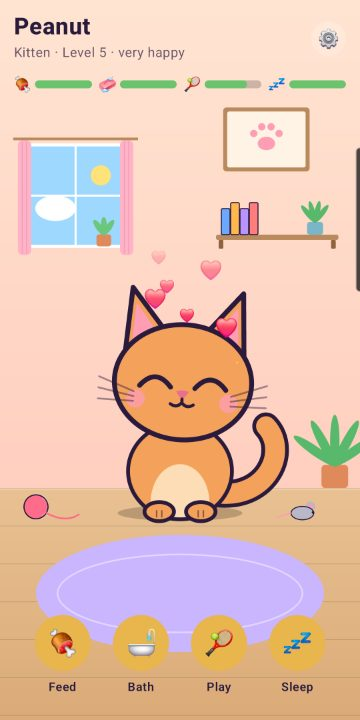
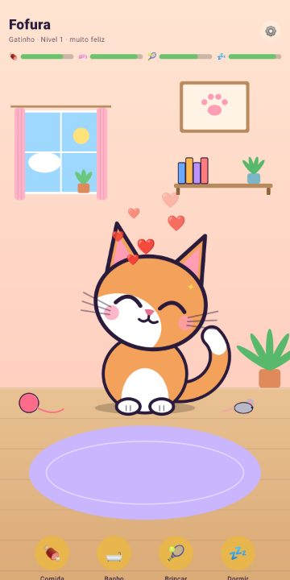
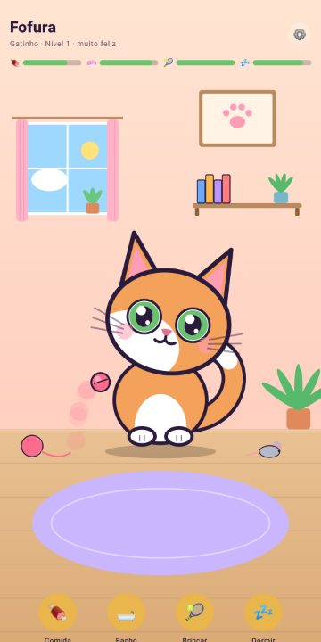

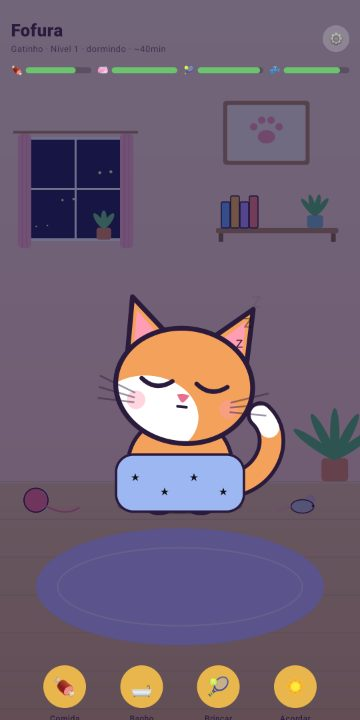
ÖzelliklerFeaturesCaracterísticasRecursos
Yavru kediyi besle, yıka, onunla oyna ve uyut. İhtiyaçları sen yokken de gerçek zamanda yavaşça değişirFeed, wash, play with and tuck in your kitten. Its needs change gently in real time, even while you are awayAlimenta, baña, juega con tu gatito y arrópalo. Sus necesidades cambian suavemente en tiempo real, incluso cuando no estásAlimente, dê banho, brinque com seu gatinho e coloque-o para dormir. As necessidades dele mudam devagar em tempo real, mesmo quando você está fora
Oyun bitmez: kedin hastalanmaz, kaçmaz, kaybolmaz. Sen dönene kadar sadece biraz uykulu ya da üzgün olurNo game over: your kitten never gets sick, runs away or disappears. It just gets a little sleepy or sad until you are backSin fin del juego: tu gatito nunca se enferma, se escapa ni desaparece. Solo se pone un poco sonoliento o triste hasta que vuelvasSem fim de jogo: seu gatinho nunca fica doente, foge ou desaparece. Ele só fica um pouco sonolento ou triste até você voltar
Odasını topla ve sıcacık tut: pencere, bitkiler, oyuncaklar ve yumuşak bir halı varTidy up its room and keep it cozy, with a window, plants, toys and a soft rugOrdena su habitación y mantenla acogedora, con ventana, plantas, juguetes y una alfombra suaveArrume o quarto e deixe tudo aconchegante, com janela, plantas, brinquedos e um tapete macio
Yavru kediye dokunup basılı tutarak sev: mırlar ve telefonun ritimle hafifçe titrerTouch and hold your kitten to pet it: it purrs and your phone gently vibrates in rhythmToca y mantén presionado a tu gatito para acariciarlo: ronronea y tu teléfono vibra suavemente al ritmoToque e segure seu gatinho para fazer carinho: ele ronrona e o celular vibra de leve no ritmo
Gerçek kedi sesleri, uykulu esnemeler, gerinmeler, yuvarlanmalar ve neşeli küçük animasyonlarReal cat sounds, sleepy yawns, stretches, rolls and happy little animationsSonidos reales de gato, bostezos, estiramientos, giros y pequeñas animaciones felicesSons reais de gato, bocejos sonolentos, espreguiçadas, rolinhos e pequenas animações felizes
Kedin kocaman kafalı minik bir yavru olarak başlar ve yaklaşık iki haftada yetişkin bir kediye dönüşürYour kitten starts tiny with a big head and grows into an adult cat over about two weeksTu gatito empieza pequeñito con la cabeza grande y se convierte en un gato adulto en unas dos semanasSeu gatinho começa pequenininho, com a cabeça grande, e vira um gato adulto em cerca de duas semanas
Her kedi farklı: tüy renkleri, desenler, gözler, kulaklar ve kuyruklar sonsuz şekilde birleşirEvery kitten is different: coat colors, patterns, eyes, ears and tails are combined in endless waysCada gatito es diferente: colores de pelaje, patrones, ojos, orejas y colas se combinan de infinitas formasCada gatinho é diferente: cores de pelo, padrões, olhos, orelhas e caudas se combinam de infinitas formas
Ona bakarak seviye atla ve konfetiyle kutlaLevel up by caring for it and celebrate with confettiSube de nivel cuidándolo y celebra con confetiSuba de nível cuidando dele e comemore com confete
İsteğe bağlı, kedin acıkınca ya da oynamak isteyince gelen nazik hatırlatmalar; geceleri aslaOptional friendly reminders when your kitten is hungry or wants to play, never at nightRecordatorios opcionales y amables cuando tu gatito tiene hambre o quiere jugar, nunca de nocheLembretes opcionais e gentis quando seu gatinho está com fome ou quer brincar, nunca à noite
Google Play Games ile bulut kaydı: kedin yeni telefonuna da gelirCloud save with Google Play Games, so your kitten follows you to a new phoneGuardado en la nube con Google Play Games para que tu gatito te siga a un teléfono nuevoSalvamento na nuvem com o Google Play Games para o gatinho acompanhar você em um celular novo
Çevrimdışı çalışır, hesap gerekmez, zaman baskısı yokWorks offline, no account needed, no timers and no pressureFunciona sin conexión, sin cuenta, sin cronómetros y sin presiónFunciona offline, sem conta, sem cronômetros e sem pressão
Yeni arkadaşınla tanışmaya hazır mısın?Ready to meet your new friend?¿Listo para conocer a tu nuevo amigo?Pronto para conhecer seu novo amigo?